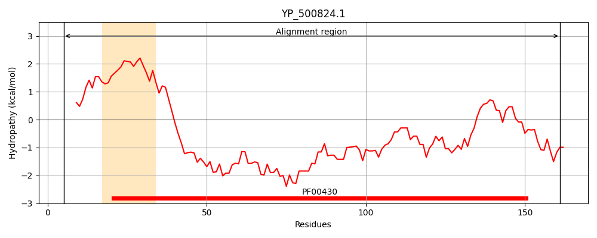
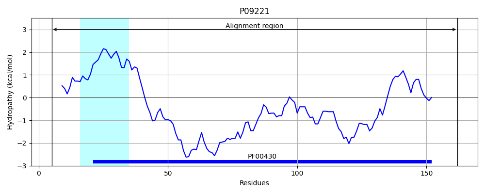
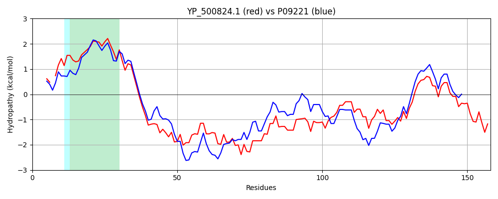

Hit Accession: P09221
Hit TCID: 3.A.2.1.14
Hit Description: gnl|BL_ORD_ID|8504 gnl|TC-DB|P09221|3.A.2.1.14 ATP synthase subunit b OS=Bacillus sp. (strain PS3) OX=2334 GN=atpF PE=1 SV=1
Mach Len: 158
e:0.000000
Query TMS Count : 1
Hit TMS Count: 1
TMS-Overlap Score: 0.900000
Predicted Substrates:CHEBI:5584;hydron
BLAST Alignment:
Score: 345 , Bit scores: 137 bits, E-value: 7.0e-42, Alignment length: 158, Percentage identity: 46
Query: 5 ANLFVLG-AAGGVEWGTVIVQVLTFIVLLALLKKFAWGPLKDVMDKRERDINRDIDDAEQAKLNAQKLEEENKQKLKETQEEVQKILEDAKVQARQQQEQIIHEANVRANGMIETAQSEINSQKERAIADINNQVSELSVLIASKVLRKEISEQDQKA 161
AN++VLG AA G+ GT+I Q+L FI+LLALL+KFAW PL ++M +RE I + + A+KL EE ++ +K++++E Q ++E+A A +Q+EQI+ A A + E A+ EI +KE+A+A + QV+ LSVLIASKV+ KE++EQDQ A
Sbjct: 5 ANVWVLGEAAHGISGGTIIYQLLMFIILLALLRKFAWQPLMNIMKQREEHIATKSTRRKNDRQEAEKLLEEQRELMKQSRQEAQALIENAASLAEEQKEQIVASARAEAERVKEAAKKEIEREKEQAMAALREQVASLSVLIASKVIEKELTEQDQAA 162 | Protein Hydropathy Plots: |
|---|
|  |  |
Pairwise Alignment-Hydropathy Plot:
|
|---|
|  |